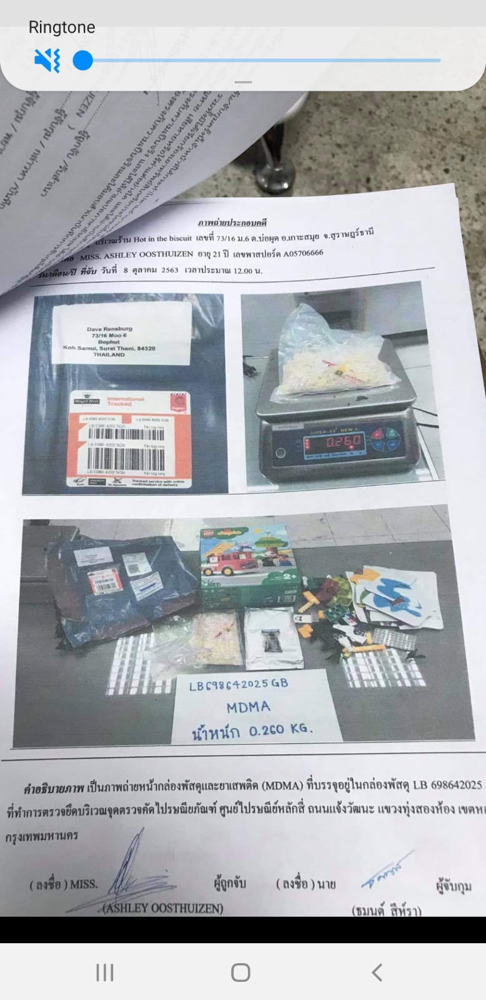
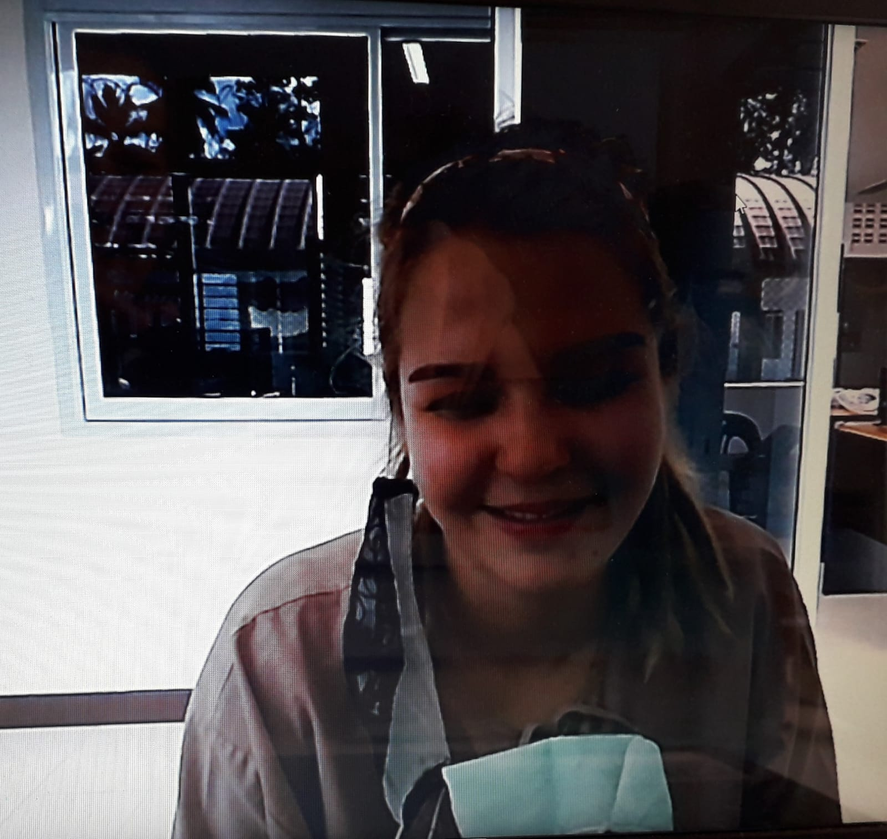
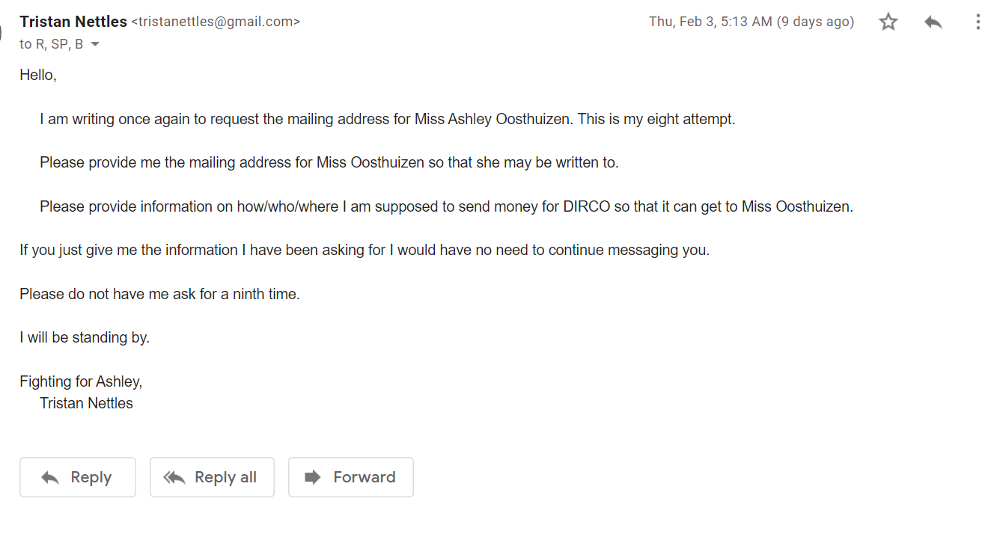
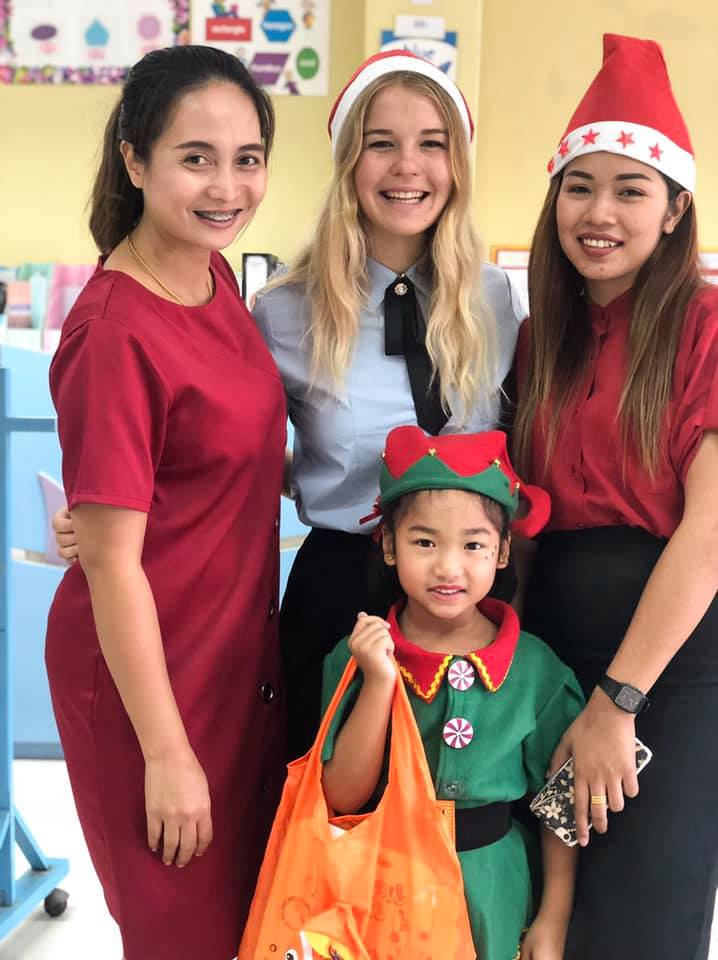
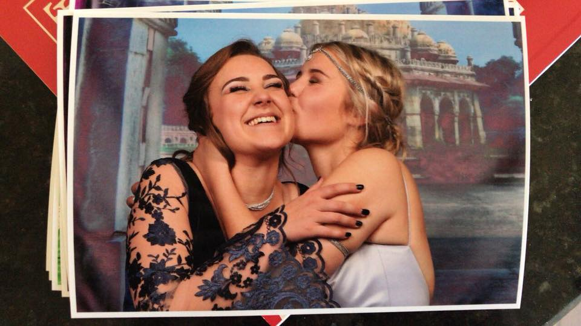
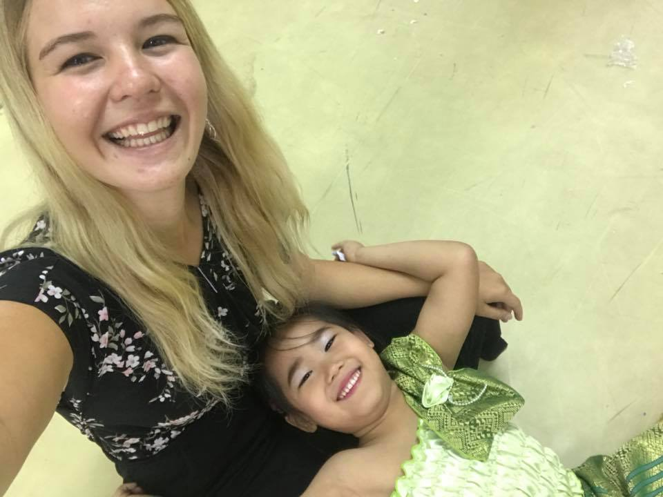
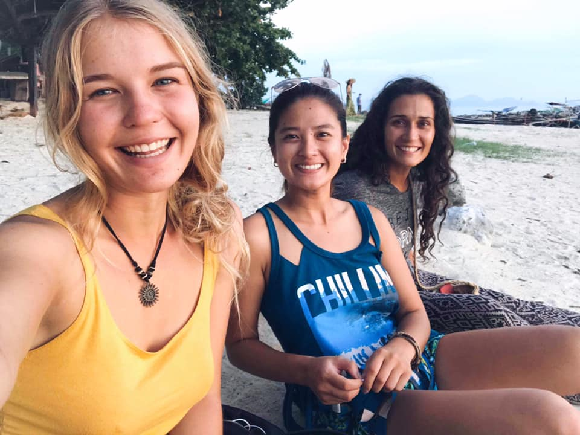

How does a 21-year-old, with no former crimes to her name, end up in a Thai prison with a death sentence hanging around her neck?
ASHLEY IS INOCENT !!!!!

Ashley Oosthuizen has not been heard from in over two months...
Ashley was arrested and charged in Koh Samui, Thailand for a crime that this man and his friends committed.

Tristan Nettles was an international dark web drug dealer who worked as a high school science teacher at Panyadee International School on Koh Samui from 2017 until the summer of 2020.

Tristan started using BTC to import party drugs to the school's main office starting in 2018.

Tristan is an admitted drug dealer and has been caught selling drugs repeatedly since he was 12 years old. He was expelled from five middle schools as well as seven high schools for drug dealing and assault. He has been to court and in jail on numerous occasions for both offenses, including 56 days in the brig while serving on active duty in the Marine Corps infantry at Quantico, VA in 2009.
Tristan was involved in a home invasion in Escatva, Mississippi in 2009 while still in the Marines. He was selling large amounts of narcotics out of a house there. He was subpoenaed and flown by the Mississippi State Attorney from Atlanta to testify at the trial. A plea deal was accepted before he took the stand.

Tristan also sold drugs while working as a volunteer school teacher in Micronesia during 2017.

When he began importing drugs to Panyadee he started out small, but by the end he was importing kilos to the school every month. They would arrive with the mail and then be picked up from the main office at last bell. It was always caught on camera.
Tristan wasn't alone though, he had help. A Russian math teacher at his school named Sergey Rumyantsev worked with him from the very beginning.

Sergei would receive hundreds of thousands of baht per week that he would use to buy BTC so that Tristan could continue importing drugs to the school.

They met and did deals all the time. There are hundreds more messages between them showing more of the same.
Sergei was paid a commission for every purchase made.

He was given cash in the teacher's office during school hours, usually at lunch, where he would then transfer the BTC which can be traced to his bitkub account.

The IP address shows Transactions happening both from his home computer and his school office computer.

Then the same BTC was soon after used to import drugs to the school as shown below.

Their teaching salary at Panyadee was only 45,000 Baht per month. Sergey is a highly intelligent high school Math teacher. He knew exactly where all the money was coming from.
They would even meet during school between classes to do business.

The money was too good to turn down. The turnover was phenomenal. Both men made profit hand over fist.
Sergey handled the bitcoin for cash, Tristan handled the bitcoin for drugs. This went on for almost three years.

Thai weed, Canadian chronic, Dutch MDMA crystals & XTC pills, S-Type ketamine, LSD from the UK, 2-CB, Cocaine from Bolivia - Tristan supplied it all. On the Darkweb he was known as Clams88.

This is the laptop that he used to purchase all of his drugs from. He used many darkweb markets including Dream, Empire, NamasteLSD, Cannazone, WhiteHouse and DeepBlueSea to name only some that he has accounts with under the moniker Clams88 or Rutherford21.
Tristan was a known serial philanderer who has admitted to being with over 200 women starting from the age of 12, including during his relationship with Ashley.

When Tristan met Ashley for the first time at a Halloween party in 2019, she was only 19 years old. He was 32.

Tristan led a secret life. Nobody on the outside knew what he was doing. He never missed work or got into any trouble and his teaching was highly praised. His students had the highest IGCSE test scores in the school's history after his second year there. He was a master manipulator.

He was even given a recommendation by the school he imported drugs to for 3 years before he left to attend medical school in Europe.

When Tristan met Ashley she was working as a kindergarten teacher at Oonrak International School. She was forced to be let go after another teacher there named Tamarin complained about Ashley's lack of a four year degree.
They had both been in competition for the same promotion.

After Ashley was laid off she tried working many odd jobs around the island as a nanny, tutor, and even as an aerial yoga instructor.
However none of these positions afforded Ashley a work permit and without a work permit she would eventually have to return back to South Africa.
It was at this time that Tristan offered Ashley the opportunity to work as the manager for a new restaraunt that he wanted to open. That way she would have a valid work permit and be able to continue living on the island.

You can see what she built herself by visiting the website: Hot in the Biscuit
Hot in the Biscuit did not open until January 16th, 2020. Tristan had been importing drugs into Panyadee since 2018.
Ashley put her whole heart and soul into that business. It was her entire life. She worked six days per week waking up at 5:15am each day to make sure the shop was opened by 7am.

Ashley made the menu, the recipes, the excel sheets for expenses, the network of local artisans who supplied her jams and meats and breads. She even did the community sales, such as the Green Market, which happened after work hours. She did everything with her friend and chef Joy who worked with her every day.
Ashley was paid only 25,000 Baht per month. She had no bank account and no bitcoin or other crypto wallets. Less than one month before her arrest she did not even have enough money for a cheap new phone after her old one stopped working. She was broke and living on a shoestring budget.

When the COVID restrictions continued and money became too tight, Tristan, who was attending medical school in the Ukraine, decided to ask Sergey if he would be willing to continue on as before. Sergey agreed.


Tristan no longer lived or worked in Thailand and he could no longer ship packages to the school because Liam Capone, the CEO of Panyadee, discovered 50 grams of MDMA that had been left in the mailroom after he had left the country in August, 2020.

After the drugs were discovered Liam Capone called the Koh Samui Police to accuse Tristan of drug importing.
Without Ashley's knowledge or consent, Tristan switched to using the biscuit shop to import drugs after the package was discovered in Panyadee. He began shipping packs there in September 2020, less than six weeks before Ashley's arrest.
He enlisted the help of a 3 year friend named Dave Rensburg to pick up the packages once the tracking showed that they'd arrived.

Dave and Tristan had been friends since 2017. He was a loyal customer from the start. Dave is the one who sold Tristan his old business license so that Tristan could start his resteraunt.
Dave had been using the shop as his mailing address since it opened in January 2019 because like Tristan, he lived far off from the main road where mail was not delivered.
This made it the perfect set up to begin a new operation since Ashley was already used to him regularly stopping by.

On October 8th, 2020 in the late morning a package arrived. Ashley was working a busy shift when a Thai delivery man approached her and ordered her to sign for a package.
After seeing the name of Dave, being further hounded by the police sent package man, and with guest behind her waiting, Ashley signed as directed despite the delivery guy knowing she was not a man named Dave. She then placed the package on the ground, unopened, and went back to work as before.
Within ten minutes the police arrived.


Ashley was taken away to a government black house where she was interrogated without a lawyer or interpreter present and then forced to sign documents in Thai and against her will under fear of rape or death. A far too common occurence for suspects in Thai police custody, as shown further below.
Ashley was only 21 years old at this time, had never been in trouble with the police in her life, and was now all alone in an unmarked location surrounded by men threatening her with harm or worse if she did not cooperate.


Ashley has been incarcerated since October 8, 2020 in Thai prison. She does not speak Thai.

The instances of people in police custody being raped, tortured, and even murdered on the islands in the Gulf of Thailand is rampant and has been widely covered:
- 1. Drug Suspect Filmed Being Suffocated to Death by Police - August 2021
- 2. 21 Year Old Burmese Woman Raped by Senior Police Inside Koh Samui Police Station (the same jail Ashley was held a few months prior) - Jan 15, 2021
- 3. Thai Police Kidnap and Torture Innocent Civilians - Sept 10, 2020
- 4. Koh Tao Police Help Cover Up Assaults and Murders - March, 2021
- 5. Koh Tao Police Force Confession Under Threat of Death - 2014
These few examples only touch the tip of the iceberg. Is it any wonder then that this 21 year old girl cooperated? They told her they knew it was not her. They told her they would help her if she signed.
Then she got handed a death sentence anyway.
Ashley's lawyers all proved to be scoundrels. Mike Greene out of BKK promised to fly to Koh Samui directly to get Ashley out on bail after he was paid 95,000 Baht. He was paid but never got on a plane.
He then forged a document which he claimed to be from the provencial court demanding a 2 million baht bail be delivered in cash, plus his fee.

Another lawyer by the name of K Aot promised that for 150,000 he could further guarentee that the bail would be granted. Each were duly paid their fee.

Neither of the lawyer's bothered to read her arrest report however which clearly stated that bail was not recommended at that time.
Due to their incompetance and dishonesty, Ashley's bail was denied and the chance for any future bail ruined after Mike Greene's Koh Samui associate Teeranan Chuaichai and the other lawyer K Aot tried repeatedly to ram it through anyway.

Tristan had left buried on his property in Koh Samui $60,000 USD in cash that he asked Sergey to go and dig up to use for Ashley's bail and defense.

.jpg)
Sergey gave Tristan half of the $60,000 but a week before Ashley's trial bill was due he absconded with the rest of the money causing Tristan to finally admit the entire truth.
.png)
Both the CEO Liam Capone and the Headmaster Giles Larkman were then made that Sergey was a part of the criminal enterprise being ran from their school.

Each were shown indisputable evidence which Sergey even admitted to. They decided to cover for him, because "he was terrified."
How did they think Ashley felt? It didn't matter. They needed Sergey. They didn't need Ashley.
The school desperately tried to keep everything underwraps so parents and the community did not know the truth - that millions of baht worth of party drugs were imported into their school between 2018-2020 by two teachers who worked there of high-standing.
Reputation is everything for a private school and so for all these reasons and more Sergey was protected and Ashley was left to hang out and dry.

Politics you see.
The Koh Samui Police department was contacted and provided evidence as well. The same police department that was found to be raping prisoners a few months later in the same jail where Ashley was held.

The evidence was covered up and ignored.

A Thai man named Mr. Big owns Panyadee as well as many hotels on the island and he has connections with the Thai Police there. Thailand is a country obsessed with 'saving face.'
It looks very ill for the school and for the police department to have an international drug operation being run successfully right under their noses by school teachers for years.
It looks much better to have the drugs coming from somewhere else. Tristan used Hot in the Biscuit for less than 6 weeks to import drugs. He used Panyadee for well more than a hundred. So why is Ashley the one in chains?
Why wasn't Panyadee charged with importation? Did they not accept packages of drugs and then later also open them as well? Ashley never tampered with the package at all. So one parties ignorance is lawful and the other parties ignorance is not? Where is the reason?
Ashley in the meantime, a 21 year old girl and former kindergarten teacher with no prior criminal record, was sentenced to death. Mercifully commuted to life in prison. At 21 years old. For being pressured into signing her name on a package by a delivery man ordered to get a signature by the police.
This is justice? No, that is entrapment.

No drugs were found at Ashley's residence despite an exhaustive search. No drug paraphenlia of any kind was found either. Her drug test came back clean and there were no pictures, videos, customers, clients, bank or crypto accounts, money, or other evidence to prove that Ashley was a drug importer.
None of this mattered. Ashley did not even live in Thailand when Tristan and Sergey begin operations out of Panyadee, as the evidence clearly showed
One day after the senior police official was caught on video raping a prisoner however he was released on 500,000 baht bail. Read) Cop Walks on 500,000 Baht Bail One Day After Raping Prisoner
Another police officer was awarded a 500,000 baht bail despite being found of murdering his own wife. Read) Wife Killing Cop Released on 500,000 Baht Bail
Ashley Oosthuizen though, the 21 year old kindergadren teacher and biscuit lady with no prior record? What mercy did she receive?
She was denied bail at 2 million baht for being made to sign her name to a package that obviously did not belong to her and then was given a death sentence commuted to life without parole.
This is a travesty.
Since Ashley's incarceration she has spent more than three months in complete isolation citing COVID protocols.
This is torture.
She is now currently in the appeal process. There is little reason to think justice will be served without your help however
Ashley used to be allowed to have phone calls with friends and family. Ashley used to be allowed up to ten books per month. She used to be allowed to be sent letters.
However in the middle of the night on December 29th, 2021, guards came to her cell. They forcibly packed her up and sent her to another prison on the mainland despite her appeal being ongoing where she was then immediately put into
another 28 day complete isolation.

This is enraging.
After this isolation ended the outside world was informed that Ashley would no longer be allowed any books. She would not be allowed letters. She would only be allowed three phone calls per YEAR, not to exceed ten minutes each.
How is this possible? Even Edward Snowden is allowed correspondence. Who did Ashley kill to be treated thus?

If Ashley's appeal fails, the next sixty years or more of her life will be spent inside of a Thai prison for a crime she did not commit.
Meanwhile actual proven rapist and murderers with decades of experience and knowledge of the law are allowed out on bail or otherwise given lenient sentences.
koh-samui-cop-accused-of-raping-burmese-woman-freed-on-bail
Ashley has not been heard from since a letter arrived dated January 9th. As of now, we do not even know if she is still alive.
The South African embassy, from the country that saw Nelson Mandela freed from his unjust incarceration, have done absolutely nothing in the face of this growing scandal.
They have been informed every step of the way with provided evidence which they too have repeatedly sought to ignore. They have been willingly complicit in the travesty of justice which continues to be perpetrated against this young
woman daily by the Thai authorities.
B Mokoena, Third Secretary Admin, Mr. Mabena, Director and Ms. R. Chaiyasol, Receptionist, all of these Bangkok South African Embassy officials have given no support to Ashley and should be held accountable for their complicity in
this series of outrages which are still being further committed.
Other prisoners at the same prison however have been receiving letters from years, but for Ashley to receive letters in the mail has been labeled a security threat as if she was working with ISIS.

Nobody from the South African Embassy has visited, written to, or even spoken to Ashley Oosthuizen once since this entire nightmare began. They have ignored countless request for both aid and information.

Ashley Oosthuizen spends everyday alone in a Thai prison for a crime she did not commit. All three of the men who are guilty of the crime are currently free. Sergey still teaches at Panyadee School where he helped import the drugs to. It really is almost too unbelievable to be true, and yet it is.
PLEASE - HELP ASHLEY.
Ashley is nothing more than a convienent victim for the Thai authorities, just like the two poor Burmese men from Koh Tao.
Burmese Men Set Up to Take Fall for Double MURDER
The truth is that Tristan Nettles and Sergey Rumyanstev imported drugs into Panyadee International School for well over two years, before Ashley even lived in Thailand.
The Thai authorities do not want the truth to get out and so Ashley is being locked away, unable to even receive mail. The flower of her youth is dying.

Ashley's only dream in life was to become a mother. The reason? She said it was because she had so much love to give.
Now without your help she may never have any children at all.
Ashley doesn't deserve this. She did not hurt, maim, or kill anybody and yet she has been treated like a leperous monster while the real monsters go free on bail.
There is not much time left. Her appeal will be decided in only three or four months time, maybe less, unless we can get an extension filed. The Thai system is notoriously corrupt and justice does not come free in the land of smiles.
Ashley's lawyer Noppadol from Thailand Bail was paid over $35,000 and did not even argue in her defense. This poor young woman has been let down by the system and its benefactors at every turn.

Is this the kind of world was want to live in and leave behind for our children?
Where young girls are made to pay the ultimate price for crimes which men decades older than them committed?
Where being hounded into signing a package by a man sent by police to force the issue is equated to a drug importation charge with a death sentence commuted to life in prison despite NO other proof?
I beg you get outraged. She is a poor, defensless, and completely alone young woman who has never hurt anyone and who has no one to fight for her. She needs you desperately. Please help fight for her.
If admitted rapist and murderers deserve bail and freedom, why doesn't Ashley?
Please, right now before you leave, share this website. Share this story anywhere and everywhere you can. Scream it from the rooftops if you are willing. Ashley only needs one influencer, one celebrity, or government official willing
to help take her cause to the world so that this travesty of justice can be undone
Please email MokoenaB@dirco.gov.za , MabenaS@dirco.gov.za, or ChaiyasolR@dirco.gov.za at the South African Embassy in Bangkok to file an official complaint against them for their utter lack of interest, service, or appreciable action.
They have failed Ashley at every turn and deserve to be replaced.
Send an email to the South African Embassy itself in protest of the current madness transpiring. You can email them here: bangkok.consular@dirco.gov.za
Send an email to the Amnesty International Org office and ask them to become involved directly. You can email them here: aimember@aiusa.org
Share this website and this story on Twitter with the hashtag #FreeAshley.
Share this website and this story on FaceBook and Instagram with the same hash, #FreeAshley.
Share this website with your local media and news organizations - what has been shown here is only the tip of the iceberg. An entire book will be written about how Tristan became the leader of a dark web drug ring spanning three islands.

GoFundMe has refused to allow Ashley to have a fundraiser.
Please consider donating to Ashley's Ethereum legal fee fund below.
Please consider purchasing a copy of 'The Shepherd - A Bronze Age Tale.' 95% of all author profits will go to Ashley's legal fund.
Please consider becoming a subscribing member to Ashley Capital & DeFi, a crypto consulting and wealth management company that is being started in her name and honor. 95% of all profits made will go to her legal fund.
https://www.freeashley.org/www.ashleydefi.com
Please, for Ashley, do at least one of these many things to help spread her story and garner support for her cause.
With the help of people like you, we can get her back to us.
Please, make this your fight. Ashley needs your help now more than ever. She is only 22 years old. Right now as you read these words she languishes in a Thai prison cell where she does not even understand the words spoken for a crime she had nothing to
do with. She has not been heard from by anyone for over two months. She is not allowed books, letters, or calls.
Won't you please help Ashley Oosthuizen?
Please, at least share this website and her story and if you are able to do more, she would be most grateful if you did. Be well assured that she is certainly worth it. Thank you for your help, compassion, and time.

Donate to Ashley's legal fund using the Ethereum blockchain option below. Donations help, but attention is most important!